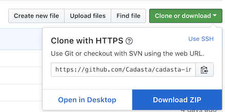
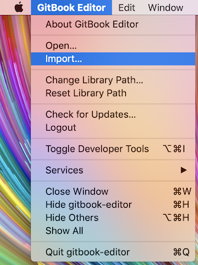
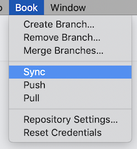
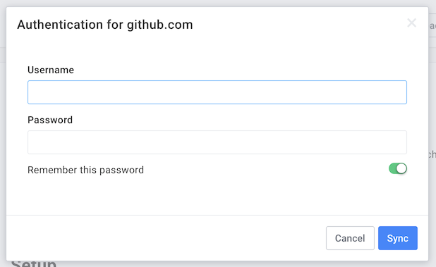

Getting Started with the GitBook Editor
If you prefer to edit documentation in a WYSIWYG editor, the GitBook Editor may be a good choice.
Download
The GitBook Editor can be downloaded from its official website.
Setup
Once installed, you will need to import this book's Git repository.
Download the GitHub repository to your local machine.
- Navigate to the repository URL: https://github.com/Cadasta/cadasta-internal-docs
Download the repository as a ZIP file.

Extract the ZIP file in a temporary folder/directory on your machine (e.g. your Downloads folder).
Import the repository into GitBook.

Sync GitBook with GitHub
Instruct GitBook to sync

Provide GitHub Username & Password

Note: If your GitHub account is configured with 2-factor authentication, then you will need to authenticate with GitHub from GitBook with a GitHub personal access token. Read more here.